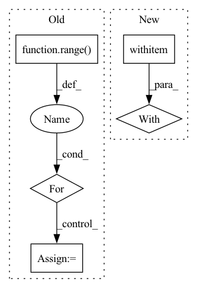

Pattern ID :16341
Before Change
rouge_dict = {}
for i in rouge_metrics:
rouge_dict[i] = []
for i in range( len(generate_corpus)):
pred_sent = generate_corpus[i]
gold_sent = reference_corpus[i]
result = self.calc_rouge(gen_corpus=[pred_sent], ref_corpus=[gold_sent])
for key_ in rouge_dict:
rouge_dict[key_].append(result[key_]["f"])
return rouge_dictAfter Change
def _calc_metrics_info(self, generate_corpus, reference_corpus):
generate_corpus = [self._preprocess(generate_sentence) for generate_sentence in generate_corpus]
reference_corpus = [self._preprocess(reference_sentence) for reference_sentence in reference_corpus]
with tempfile .TemporaryDirectory() as path:
generate_path = os.path.join(path, "generate_corpus.txt")
reference_path = os.path.join(path, "reference_corpus.txt")
self._write_file(generate_path, generate_corpus)
self._write_file(reference_path, reference_corpus)In pattern: SUPERPATTERN
Frequency: 4
Non-data size: 5
Instances Fragment ID: 54813868
Project Name: rucaibox/textbox
Commit Name: ca43fa8706693cd72c9b0a3ad2a6623b7afc7c11
Time: 2021-04-25
Author: 602525931@qq.com
File Name: textbox/evaluator/rouge_evaluator.py
M Class Name: RougeEvaluator
N Class Name: RougeEvaluator
M Method Name: _calc_metrics_info(3)
N Method Name: _calc_metrics_info(3)
M Parent Class: AbstractEvaluator,Rouge155
N Parent Class:
M File Name: textbox/evaluator/rouge_evaluator.py
N File Name: textbox/evaluator/rouge_evaluator.py
M Start Line: 81
M End Line: 91
N Start Line: 101
N End Line: 118
Before Change
def read_shard(ckpt_dir):
out = []
for idx in range( WEIGHT_PIECES):
file_path = ckpt_dir + f"{idx}.npz"
with smart_open(file_path, "rb") as f:
buf = f.read()
f_io = io.BytesIO(buf)After Change
def read_shard(ckpt_dir):
with smart_open (ckpt_dir, "rb") as f:
buf = f.read()
f_io = io.BytesIO(buf)
deserialized = list(np.load(f_io).items())
return [tensor for idx, tensor in sorted(deserialized, key=lambda x: int(x[0]))] Fragment ID: 54813864
Project Name: homebrewnlp/homebrewnlp-jax
Commit Name: 8c9cc16b7d3e0be58199b36a90e4c40d2e7e1626
Time: 2022-09-05
Author: 39779310+ClashLuke@users.noreply.github.com
File Name: src/utils/checkpoint.py
M Class Name: AnonimousClass
N Class Name: AnonimousClass
M Method Name: read_shard(1)
N Method Name: read_shard(1)
M Parent Class:
N Parent Class:
M File Name: src/utils/checkpoint.py
N File Name: src/utils/checkpoint.py
M Start Line: 83
M End Line: 92
N Start Line: 73
N End Line: 77
Before Change
layer_dict = {0: 2, 1: 5, 2: 8, 3: 9, 4: 10, 5: 11, 6: 12, 7: 13, 8: 14, 9: 17, 10: 20, 11: None}
for layer_num_orig in range( 12):
// Load the trained generator.
self.restore_model(self.test_iters)
// Set data loader.
if self.dataset == "CelebA":
data_loader = self.celeba_loader
elif self.dataset == "RaFD":
data_loader = self.rafd_loader
// Initialize Metrics
l1_error = 0.0
l2_error = 0.0
min_dist = 0.0
l0_error = 0.0
perceptual_error = 0.0
n_samples = 0
// 11 layers + output
// layer_num_orig = 11
print("Layer", layer_num_orig)
for i, (x_real, c_org) in enumerate(data_loader):
// Black image
black = np.zeros((1,3,256,256))
black = torch.FloatTensor(black).to(self.device)
// Prepare input images and target domain labels.
x_real = x_real.to(self.device)
c_trg_list = self.create_labels(c_org, self.c_dim, self.dataset, self.selected_attrs)
layer_num = layer_dict[layer_num_orig]
pgd_attack = attacks.LinfPGDAttack(model=self.G, device=self.device, feat=layer_num)
// Translate images.After Change
x_advs[c_trg] = x_adv, perturb
for c_trg in c_trg_list:
with torch .no_grad():
gen_noattack, gen_noattack_feats = self.G(x_real, c_trg)
// Attack
// x_adv, perturb = pgd_attack.perturb(x_real, black, c_trg)
_, perturb = x_advs[c_trg] Fragment ID: 54813865
Project Name: natanielruiz/disrupting-deepfakes
Commit Name: 4161e50d0efc7a176c9010f77b9c9e27746209d1
Time: 2019-12-26
Author: nruiz@Nataniels-MacBook-Pro.local
File Name: stargan/solver.py
M Class Name: Solver
N Class Name: Solver
M Method Name: test_attack(1)
N Method Name: test_attack(1)
M Parent Class: object
N Parent Class: object
M File Name: stargan/solver.py
N File Name: stargan/solver.py
M Start Line: 664
M End Line: 747
N Start Line: 576
N End Line: 659
Before Change
}
peak_memory = []
for _ in range( n_trials):
rss = memory_usage(proc=(_track_peak_memory, (model, inputs)),
max_usage=True,
backend="psutil",
include_children=False,After Change
"input_ids": torch.zeros((1, seq_len), dtype=torch.int64).to(device)
}
with profile (activities=[ProfilerActivity.CPU, ProfilerActivity.CUDA],
profile_memory=True) as p:
model(**inputs)
if device == "cpu":
peak_memory = sum([key.cpu_memory_usage for key in p.key_averages()]) Fragment ID: 54813867
Project Name: microsoft/archai
Commit Name: f966cd315f5e8f126a3296c0852981a9249b309b
Time: 2022-12-16
Author: gth.rosa@uol.com.br
File Name: archai/nlp/nas/search_utils/constraints.py
M Class Name: AnonimousClass
N Class Name: AnonimousClass
M Method Name: measure_peak_memory(5)
N Method Name: measure_peak_memory(7)
M Parent Class:
N Parent Class:
M File Name: archai/nlp/nas/search_utils/constraints.py
N File Name: archai/nlp/nas/search_utils/constraints.py
M Start Line: 80
M End Line: 123
N Start Line: 106
N End Line: 115